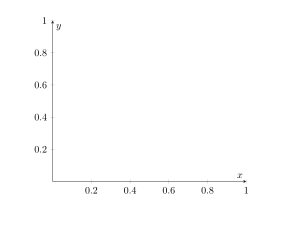

LaTeX 教學系列：繪圖小能手 TikZ
利用 TikZ 套件繪製圖形
對於許多人來說，LaTeX 的功能可能就是打打文字、輸出成 PDF，僅此而已；但對於需要大量圖形的文件人而言，LaTeX 的繪圖能力實際上是一個強大而不可或缺的工具。你可以直接在你的文件裡面，用幾行程式碼就繪製出超專業的圖形，不用在 Word 和 PowerPoint、Photoshop 等軟體之間來回切換了。
TikZ 和 PGF 是 LaTeX 中用於繪圖和建立圖形的強大套件，而這兩個套件密切相關，通常一起使用。
PGF Graphics Format）是一個基礎套件，為 LaTeX 提供了底層的繪圖指令和功能。它最初的設計是一個通用的繪圖引擎，可在不同的 TeX 編譯器（如 pdfTeX、XeTeX 和 LuaTeX）中使用。PGF 提供了基本的繪圖元素，如線條、形狀、箭頭等，以及一些基本的變換和路徑操作。
而 TikZ（TikZ ist kein Zeichenprogramm）則是建立在 PGF 之上的高級繪圖工具。TikZ 的名稱是德語「TikZ 不是繪圖軟體」的縮寫，這個幽默的名稱恰好反映了它的設計理念：它並不只是一個獨立的繪圖程式，而是一個集成在 LaTeX 中的繪圖工具。TikZ 提供了一種更直觀、更易於使用的語法，讓使用者能夠更輕鬆地創建複雜的圖形。
| 特性 | TikZ | pgf |
|---|---|---|
| 定義 | 高級繪圖套件 | 底層繪圖工具 |
| 使用難度 | 相對簡單，語法直觀 | 較為複雜，需要更多技術細節 |
| 功能範圍 | 提供豐富的高級功能和拓展繪圖庫 | 提供基本的繪圖元素和操作 |
| 靈活性 | 靈活性高，支持複雜圖形的繪製 | 靈活性低，主要用於基礎繪圖 |
| 與 LaTeX 整合 | 深度整合，可直接在文件中使用 | 作為底層支持，通常不直接使用 |
| 適用場景 | 繪製各種複雜圖形、圖表、示意圖等 | 開發新的繪圖功能或自定義 TikZ 指令 |
| 學習曲線 | 中等，有豐富文件與範例 | 較陡，需深入理解 TeX 和圖形繪製 |
| 延伸性 | 高，有大量的拓展繪圖庫和社群 | 中等，主要用於底層擴展 |
本篇文章將會著重在利用 TikZ 繪製圖形，教會你怎麼用 TikZ 繪製各式各樣的圖形，並且提供豐富的範例。
TikZ 使用簡介
TikZ 套件繪製圖形的方式有兩種，最簡單也是最直接的方式是將繪圖指令放在 \tikz 指令後面，但是這樣十分容易混淆，也會讓程式碼變得很難看。因此常見的方法是將繪圖指令包在 tikzpicture 環境中，且可以設定不同的選項。
而通常如果我們只是想要利用 TikZ 來繪製圖形，然後輸出成向量圖形 .svg 檔的話，我們會使用以下方法。首先建立一份 .tex 文件，並使用 standalone 類別。然後將 TikZ 指令放在裡面。例如我們建立一個 example.tex 的文件：
接著有幾種作法，第一種是使用 dvisvgm 生成 SVG 文件：我們需要將剛剛創建的主文件在終端機進行編譯。先使用 pdflatex 進行編譯，確認生成的 PDF 文件無誤：
pdflatex example.tex如果 PDF 文件看起來正確，則使用 latex 指令生成 DVI 文件：
latex example.tex最後使用 dvisvgm 指令將 DVI 文件轉換為 SVG 文件：
dvisvgm example.dvi這樣即可得到 SVG 文件。第二種方法則是安裝 pdf2svg 軟體在電腦中，安裝成功後執行以下程式碼即可：
pdf2svg <PDF 檔案.pdf> <SVG 檔案.svg>或是我們可以使用GeoGebra來繪製圖形，並且輸出成 TikZ 或 PGF 格式。使用方法直接參考以下影片：
當然還有其他方法，就是到網路上搜尋 PDF 轉換 SVG 的網站，然後上傳檔案後即可，不過這個方法稍顯複雜，因此建議使用上面三種方式。此外，如果你想要繪製更好看、更高解析度的圖片，可以使用Inkscape繪圖，以下 YouTube 播放清單有完整教學：
基本圖形繪製
上面提到，TikZ 是基於 PGF 而建立的高級繪圖工具，因此許多指令都是延續 PGF 的指令。PGF 最基礎的繪圖指令是：
\draw[選項] 操作;這邊有兩件事必須注意，首先 [] 中的內容可填可不填，完全依照使用者需要繪製何種圖形而決定；第二，如果你曾經學過 C/C++，應該知道每一行程式碼的結尾都需要以 ; 表示結束，而 PGF 也一樣。
點、線、面
學習圖形時，最常聽到的應該是就是點線面這三個元素，因此我們會從這三個元素開始講起。
點
繪製一個點的方法很簡單
\draw[fill=black] (0, 0) circle (2pt);這段程式碼的意思代表使用繪圖指令 \draw，並告訴系統要將該圖形以黑色填滿，接著在座標 \((0, 0)\) 的位置繪製一個半徑為 2pt 的圓。看起來就像這樣：
如果把選項裡面的填色指令拿掉會發生什麼事？
它會變成一個空心圓。
直線
在數學上，我們知道要構成一條直線，需要給定兩點。TikZ 繪製直線的方法也是需要兩點進行連接，語法是 \draw (x1, y1) -- (x2, y2);，其中 (x1, y1) 與 (x2, y2) 分別代表兩點的座標，而 -- 則是告訴 TikZ 我們要將兩點連線的指令。
假設給定兩點 \(A\) 與 \(B\)，座標分別為 \(A(0, 2)\) 與 \(B(3, 4)\)，則連接兩點而成的線段 \(\overline{AB}\) 的繪製方式為
\draw (0, 2) -- (3, 4);當然，我們可以不只將兩點進行連線，可以連接三個、四個、甚至到 \(n\) 個都沒問題。例如：
\draw (1, 3)--(2, 2)--(4, 5);其結果就會是：
如果你覺得交接處的地方是直角很醜，想要改成圓角的話，就在選項中加入 rounded corners 即可。
\draw[rounded corners] (1, 3)--(2, 2)--(4, 5);這樣交接處的地方就不會那麼尖銳，變成圓角了（就跟人一樣在社會打滾久了就會變圓滑）。
封閉圖形
如果將三個點用線段連接起來，就會形成一個封閉圖形，或者說一個面1。繪製一個封閉圖形的方法很簡單，就是以線段連接的方式將三點連接，最後加上起始點的座標。
\draw (1, 3)--(2, 2)--(4, 5) -- (1, 3);但是這樣並不是 TikZ 中合法繪製封閉圖形的方法，正確的方式應該是使用 cycle 指令，告訴 TikZ 這幾個點需要以「循環」的方式進行連接。
\draw (1, 3)--(2, 2)--(4, 5) -- cycle;cycle）乍看之下，你可能沒辦法發現差別，但是只要我們將兩張圖並排，並且使用圓角指令，就可以發現差別。
左邊的圖是沒有使用 cycle 指令，從最後一個點到初始點的交接處並沒有被調整成圓角；但是有圖則明顯有被調整為圓角。因此，正確繪製一個封閉圖形的方法，一定要在最後使用 cycle 指令。
而繪製矩形的方式就簡單很多了。在 PowerPoint 或其他繪圖軟體中，繪製矩形的方法是用拉的，也就是從一個點拉到對角頂點。在 TikZ 中也是利用同樣的方式，給定兩個對角頂點，在中間加上 rectangle 即可。
\draw (0, 0) rectangle (4, 2);此程式碼繪製出給定 \((0, 0)\) 與 \((4, 2)\) 兩個對角頂點的矩形。同理，我們也可以將這個矩形四個角調整為圓角。
\draw[rounded corners] (0, 0) rectangle (4, 2);不過這時你可能會問：「如何繪製多邊形？」或者「如何繪製正多邊形？」這個問題我們等稍後再回答。
圓、橢圓、弧
相信每個臺灣學生一定有過國中二年級用圓規與直尺進行尺規作圖的痛苦經歷。圓規作圓的步驟是，將圓規的針尖固定在畫紙上作為圓心，然後調整圓規的開口寬度至所需的半徑。接著，保持針尖穩定不動，用另一端的鉛筆沿著圓心均勻旋轉一周，就可以畫出光滑的圓形了。

因此，從上面的敘述，我們可以知道，畫一個圓只需要兩個要素：圓心與半徑。TikZ 繪製圓的邏輯也是如此，指定圓心位置與半徑就可以了，語法是 \draw (x, y) circle (半徑長度);。舉例來說，我們要繪製一個圓心在 \((0, 0)\)、半徑為 1 的圓，就可以用以下程式碼：
\draw (0, 0) circle (1);而繪製橢圓的方法也與圓相似，只要給定橢圓的中心點以及長軸和短軸的長度。然後在繪圖指令中使用 ellipse，將橢圓的長軸和短軸長度寫在中間，用括號括起來，並用 and 隔開即可，這樣就能畫出一個橢圓。
\draw (0, 0) ellipse (2 and 1);繪製圓弧或橢圓弧時，只需使用 arc 指令並提供角度即可。不過，弧分為圓弧與橢圓弧，因此必須特別指定是圓還是橢圓的弧。無論是繪製哪一種弧，都需要指定中心點，然後設定起始角度和終止角度即可，唯一的差別是要指定圓與橢圓，圓弧的語法是 (x, y) arc (起始角度:終止角度:半徑)，橢圓弧則為 (x, y) arc (起始角度:終止角度:長軸長與短軸長)。
% 繪製圓弧
\draw (0, 0) arc (0:270:1);
% 繪製橢圓弧
\draw (0, 0) arc (0:270:2 and 1);曲線
完成簡單的圖形後，接著就要進到比較複雜一點的圖了。首先我們要介紹曲線。TikZ 提供了多種方法來繪製不同類型的曲線，包括貝茲曲線、拋物線和自定義曲線。
貝茲曲線
貝茲曲線（Bézier curve）是一種數學曲線，由法國工程師皮埃爾·貝茲於 1960 年代開發。貝茲曲線的基本想法是利用控制「點」來定義曲線的「形狀」，通過這些控制點可以生成光滑的曲線。
貝茲曲線的算法基於線性插值和遞迴方法。給定 \(n+1\) 個控制點 \(P_{0}, P_{1}, \cdots, P_{n}\)，貝茲曲線可以表示為：
\[ B(t) = \sum_{i=0}^{n} \binom{n}{i} (1-t)^{n-i} t^i P_i \]
其中， \(t\) 是參數，取值範圍為 0 到 1； \(\binom{n}{i}\) 是二項式係數，而遞迴計算貝茲曲線的算法稱為 De Casteljau 算法，主要步驟如下：
- 將參數 \(t\) 取值範圍分為多個小段。
- 對每一段進行線性插值計算，生成新的控制點。
- 重複上述步驟，直到只剩下一個控制點，該點即為曲線上的點。
上面這些看了很頭痛的東西參考自維基百科與 ChatGPT 的協助，畢竟筆者不是讀資訊工程的，就不獻醜了。
我們使用 .. controls .. 指令來繪製貝茲曲線，且需要至少一個控制點。其語法為：
\draw (起點) .. controls (控制點1) and (控制點2) .. (終點);以下給予不同數量控制點的範例：
% 單個控制點的貝茲曲線
\draw (0, 0) .. controls (1, 1) .. (2, 0);
% 多個控制點的貝茲曲線
\draw (0, 0) .. controls (1, 2) and (3, 2) .. (4, 0);
% 複合貝茲曲線
\draw (0, 0) .. controls (1, 2) .. (2, 0) .. controls (3, -2) .. (4, 0);
拋物線
在 TikZ 中，我們使用 parabola 來繪製拋物線，基本的語法結構為：
\draw (起點) parabola (終點);如果想要指定拋物線的頂點，可以使用 parabola bend 指令：
\draw (起點) parabola bend (頂點) (終點);下面是範例程式碼，展示如何使用不同的參數來繪製各種拋物線：
% 基本拋物線
\draw (0, 0) parabola (3, 3);
% 指定頂點的拋物線
\draw (0, 0) parabola bend (1.5, -1) (3, 0);
% 從頂點開始的拋物線
\draw (1, 2) parabola (2, 0);
\draw (2, 0) parabola (3, 2);
% 兩段連接的拋物線
\draw (1, 1) parabola bend (2, 0) (3, 1) parabola bend (4, 2) (5, 1);自定義曲線
自定義曲線主要是通過出射角與入射角的設定來實現的，也就是說指定曲線起點和終點的切線角度，從而控制曲線的形狀。其基本語法為：
\draw (起點座標) to[out=出射角度, in=入射角度] (終點座標);在 TikZ 中，角度是按照數學的標準定義的，例如 \(0^{\circ}\) 指向右方、\(90^{\circ}\) 指向上方、\(180^{\circ}\) 指向左方、\(270^{\circ}\)（或 \(-90^{\circ}\)）指向下方。以下分別展示四個不同的自定義曲線：
% 曲線 (a)
\draw (0, 0) to[out=0, in=180] (4,0);
% 曲線 (b)
\draw (0,-1) to[out=45, in=135] (4,-1);
% 曲線 (c)
\draw (0,-2) to[out=90, in=90] (4,-2);
% 曲線 (d)
\draw (0,-3) to[out=-45, in=-135] (4,-3);可以看到如果出射角度為 \(0^{\circ}\)，入射角度為 \(180^{\circ}\)，事實上就是一條直線。
箭頭
箭頭的功能是用來指示方向，生活中隨處都能看到箭頭的存在，最常見的就是路標。此外，箭頭也能夠用來表示趨勢，例如看到 \(\uparrow\) 就知道這個量是往上升，\(\downarrow\) 則是往下降。
在 TikZ 中，我們可以利用箭頭來標明方向，讓讀者能夠跟隨箭頭的方向閱讀與理解圖形，而 TikZ 提供了各式各樣的箭頭樣式供我們選擇，利用不同的箭頭樣式，可以用在不同地方。
TikZ 的內建箭頭有許多種，不過這些箭頭都有一些最基本的概念，就是方向。我們先來講最簡單的箭頭表示方式，即是在 \draw 指令的選項中加上 ->、<- 或 <->。而選擇哪一種則取決於方向。
% 從 (0, 0) 到 (2, 0)
\draw[->] (0, 0) -- (2, 0);
% 從 (2, 0) 到 (0, 0)
\draw[<-] (0, 0) -- (2, 0);
% 雙向箭頭
\draw[<-] (0, 0) -- (2, 0);
不難發現，只要在 - 的前面或後面加上對應方向的大於或小於符號即可。同理，其他的指令也是一樣，以下用表格直接呈現 TikZ 內建的箭頭有哪些：
這裡是包含指令的 TikZ 內建箭頭列表，以 Markdown 表格呈現：
| 箭頭名稱 | 指令 |
|---|---|
| 隱形箭頭 | stealth |
| 隱形反向箭頭 | stealth reversed; |
| 指向箭頭 | to |
| 指向反向箭頭 | -to reversed |
| LaTeX 樣式的箭頭 | -latex |
| LaTeX 樣式的反向箭頭 | -latex reversed |
|-| 樣式箭頭 |
| |
它們的用法如同上面所述，根據想要指示的方向，在 - 前、後或前後同時加上指令即可。
如果想要繪製其他類型的箭頭，可以使用 arrows.meta 庫。該庫如其名，可以繪製不同類型的箭頭。在載入 TikZ 套件後，我們以下面的程式碼載入該庫：
\usepackage{tikz}
\usetikzlibrary{arrows.meta}接著就可以透過上面相似的方式繪製箭頭。TikZ arrows這個網站專門介紹各種箭頭的繪製方式，筆者在此不贅述（絕對不是因為我懶）。
網格與座標軸
繪製網格和座標軸在圖形中扮演著重要角色。網格提供了一個背景參考，幫助讀者定位和測量圖形中的各個元素，尤其適合用在展示連續函數的圖形、資料分佈以及其他需要精確定位的視覺表示。
此外，座標軸則是圖形中的基本參考系。它們不僅用來清楚告訴讀者每一個數據點的位置，更能提供關鍵的標記，幫助讀者快速理解圖形所代表的數值範圍、趨勢等重要資訊。
網格
在 TikZ 中，繪製網格的基本方法是使用 \draw 和 grid 兩個指令相互搭配。基本語法為：
\draw[step=網格寬度] (x1, y1) grid (x2, y2);例如我們定義網格範圍從 \((0, 0)\) 到 \((7, 7)\)，並將網格寬度設定為 1cm：
\draw[step=1cm] (0, 0) grid (7, 7);繪製座標軸
如果想要繪製座標軸有以下幾種作法。第一種作法是直接繪製 \(x\) 軸與 \(y\) 軸兩個箭頭。
% 繪製 $x$ 軸
\draw[->] (0, 0) -- (5, 0);
% 繪製 $y$ 軸
\draw[->] (0, 0) -- (0, 5);
如果說想要用一行程式碼解決，則可以參考以下方式：
\draw[<->] (0, 5) -- (0, 0) -- (5, 0);也可以繪製出一樣的效果。第二種方式則是使用 pgfplots 套件。載入 pgfplots 套件後，我們用 axis 環境繪製，並在選項中進行調整。我們先來看一下最簡單的範例：
\begin{axis}[
axis lines = middle,
xlabel = $x$,
ylabel = $y$,
]
\end{axis}
axis 環境預設 \(x\) 與 \(y\) 兩軸的最大值為 1，且我們可以看到，這個座標軸明顯與我們用兩個箭頭繪製出的土炮座標軸有很大的區別：首先，它直接加上箭頭，也不用特別指定；此外，兩軸上都有刻度。以下是 axis 環境可以調整的選項：
以下是 pgfplots 套件中，axis 環境可以調整的選項及其說明，以 Markdown 表格呈現：
| 選項 | 說明 |
|---|---|
title |
設定座標軸的標題，例如 title={My Plot} |
xlabel |
設定 \(x\) 軸標籤，例如 xlabel={x-axis label} |
ylabel |
設定 \(y\) 軸標籤，例如 ylabel={y-axis label} |
zlabel |
設定 \(z\) 軸標籤（適用於三維圖），例如 zlabel={z-axis label} |
xmin, xmax |
設定 \(x\) 軸的最小值和最大值，例如 xmin=0, xmax=10 |
ymin, ymax |
設定 \(y\) 軸的最小值和最大值，例如 ymin=0, ymax=10 |
zmin, zmax |
設定 \(z\) 軸的最小值和最大值（適用於三維圖），例如 zmin=0, zmax=10 |
xtick, ytick |
設定 \(x\) 軸和 \(y\) 軸的刻度值，例如 xtick={0,2,...,10}, ytick={0,1,...,5} |
ztick |
設定 \(z\) 軸的刻度值（適用於三維圖），例如 ztick={0,5,10} |
xticklabel |
設定 \(x\) 軸刻度標籤，例如 xticklabel={$\pi/2$, $\pi$, $3\pi/2$, $2\pi$} |
yticklabel |
設定 \(y\) 軸刻度標籤，例如 yticklabel={A, B, C, D} |
zticklabel |
設定 \(z\) 軸刻度標籤（適用於三維圖），例如 zticklabel={Low, Medium, High} |
grid |
開啟或關閉網格線，例如 grid=major 或 grid=minor |
legend |
設定圖例位置，例如 legend pos=north east |
axis lines |
設定座標軸的顏色和樣式，例如 axis lines=middle 或 axis lines=left |
enlargelimits |
設定座標軸的擴展限度，例如 enlargelimits=true 或 enlargelimits=0.1 |
scale |
設定座標軸的縮放，例如 scale=1.5 |
axis on top |
設定座標軸顯示在圖形上方，例如 axis on top |
axis background |
設定座標軸的背景顏色，例如 axis background/.style={fill=blue!10} |
tick style |
設定刻度的樣式，例如 tick style={color=red, thick} |
every axis label |
設定每個座標軸標籤的樣式，例如 every axis label/.style={font=\small} |
every tick label |
設定每個刻度標籤的樣式，例如 every tick label/.style={font=\tiny} |
major grid style |
設定主要網格線的樣式，例如 major grid style={dashed, gray} |
minor grid style |
設定次要網格線的樣式，例如 minor grid style={dotted, gray} |
xlabel style |
設定 \(x\) 軸標籤的樣式，例如 xlabel style={font=\bfseries, color=blue} |
ylabel style |
設定 \(y\) 軸標籤的樣式，例如 ylabel style={font=\itshape, color=green} |
zlabel style |
設定 \(z\) 軸標籤的樣式（適用於三維圖），例如 zlabel style={font=\ttfamily, color=purple} |
axis line style |
設定座標軸線條的樣式，例如 axis line style={thick, blue} |
tick align |
設定刻度的對齊方式，例如 tick align=outside 或 tick align=inside |
例如以下範例：
\begin{axis}[
axis lines = middle,
xlabel = $x$,
ylabel = $y$,
enlargelimits,
every axis x label/.style={
at={(ticklabel* cs:1.05)},
anchor=west,
},
every axis y label/.style={
at={(ticklabel* cs:1.05)},
anchor=south,
},
xmin = -5,
xmax = 5,
ymin = -5,
ymax = 5,
xtick = {-5, -4,..., 5},
ytick = {-5, -4,..., 5},
tick label style = {font=\tiny},
grid = both,
grid style = {line width=.1pt, draw=gray!10},
major grid style = {line width=.2pt,draw=gray!50},
axis line style = {->},
]
\end{axis}繪製網格與座標軸的注意事項
用 TikZ 繪製網格和座標軸時，有幾點需要特別注意：
網格與刻度的密度: 網格與刻度太密會讓圖形看起來很擁擠，太稀疏則可能不夠精確。
顏色的選擇: 網格和座標軸的顏色不應該太突兀，通常我們會選擇淺灰色或淺藍色會比較合適。
座標範圍: 根據你要展示的內容來選擇合適的座標範圍。範圍太大會浪費空間，太小則可能無法完整顯示你想要展示的內容。
標籤的大小和位置: 確保軸的標籤不要被其他元素擋住。
標示點與新增文字
我們在繪製圖形時，有時需要標示特定的點並新增字說明，從而讓讀者更加清楚地圖形中的關鍵部分。例如，在散佈圖中，我們可以標示出極端值，並附上簡短的文字說明，以便讀者能夠快速識別和理解該點所具有的特殊統計意涵；在折線圖中，我們可以標註出重要的轉折點或峰值，並加入相關的注釋，以解釋這些轉折點可能代表的現象或趨勢。
新增標示點
在 TikZ 中，\filldraw 指令可以用於同時填充和描繪出一個形狀。而當我們將其用於標示點時，通常會用作繪製實心圓點。\filldraw 的基本語法為
\filldraw[選項] (x, y) circle (半徑長度);例如，要在座標 \((2,3)\) 處繪製一個黑色實心點，可以使用：
\filldraw (2,3) circle (1pt);
新增文字
在 TikZ 中，node 是用於新增文字標籤的工具，其基本語法為：
\node[選項] at (x, y) {文字內容};node 這個字的中文可以翻譯成節點，上面這段程式碼的意思是將節點放置在特定座標點上，因此使用 at。注意到文字內容可以是簡單的文字，也可以是行內的數學模式，通常來說文字標籤不會超過兩行，因此盡量避免讓文字內容太長而影響閱讀。
而 \node 的選項包含以下幾個：
以下是調整後的表格，將每 22 個選項換欄：
| 選項 | 說明 | 選項 | 說明 |
|---|---|---|---|
anchor |
設定節點錨點的位置，例如 north, south east 等等。 |
text |
指定節點中的文字。 |
at |
設定節點的具體位置，通常與 (x, y) 座標配合使用。 |
text width |
設定節點中文字的最大寬度。 |
above |
在當前位置上方放置節點。 | align |
設定文字的對齊方式，例如 left, right, center。 |
below |
在當前位置下方放置節點。 | font |
設定文字的字體和大小。 |
left |
在當前位置左側放置節點。 | draw |
繪製節點邊框。 |
right |
在當前位置右側放置節點。 | fill |
填充節點背景色。 |
below left |
在當前位置左下方放置節點。 | rounded corners |
設定節點的邊框為圓角矩形。 |
below right |
在當前位置右下方放置節點。 | minimum width |
設定節點的最小寬度。 |
above left |
在當前位置左上方放置節點。 | minimum height |
設定節點的最小高度。 |
above right |
在當前位置右上方放置節點。 | inner sep |
設定節點內部與邊框之間的間距。 |
circle |
將節點設為圓形。 | outer sep |
設定節點外部與其他對象之間的間距。 |
rectangle |
將節點設為矩形。 | opacity |
設定節點的透明度。 |
text |
指定節點中的文字。 | node distance |
設定節點之間的距離，通常在 matrix 或 graph 環境中使用。 |
text width |
設定節點中文字的最大寬度。 | xshift |
在 \(x\) 軸方向上移動節點的位置。 |
align |
設定文字的對齊方式，例如 left, right, center。 |
yshift |
在 \(y\) 軸方向上移動節點的位置。 |
font |
設定文字的字體和大小。 | rotate |
旋轉節點一定角度。 |
draw |
繪製節點邊框。 | scale |
縮放節點。 |
fill |
填充節點背景色。 | label |
為節點添加標籤。 |
rounded corners |
設定節點的邊框為圓角矩形。 | name |
為節點指令，以便在其他地方引用。 |
minimum width |
設定節點的最小寬度。 | pos |
設定節點相對於路徑的位置，例如 0.5 表示路徑的中點。 |
minimum height |
設定節點的最小高度。 | inner sep |
設定節點內部與文字之間的間距。 |
inner sep |
設定節點內部與邊框之間的間距。 | outer sep |
設定節點外部與其他對象之間的間距。 |
outer sep |
設定節點外部與其他對象之間的間距。 | node contents |
指定節點的內容，通常用於簡化節點定義。 |
opacity |
設定節點的透明度。 | fit |
使節點適應指定的範圍，通常與 fit 圖形環境配合使用。 |
node distance |
設定節點之間的距離，通常在 matrix 或 graph 環境中使用。 |
text depth |
設定文字的深度，用於對齊。 |
xshift |
在 \(x\) 軸方向上移動節點的位置。 | text height |
設定文字的高度，用於對齊。 |
yshift |
在 \(y\) 軸方向上移動節點的位置。 | overlay |
使節點在頁面頂層繪製。 |
rotate |
旋轉節點一定角度。 | auto |
自動選擇最合適的節點位置，例如對於標籤。 |
scale |
縮放節點。 | anchor base west |
設定節點錨點為基線左側。 |
label |
為節點添加標籤。 | anchor base east |
設定節點錨點為基線右側。 |
name |
為節點指令，以便在其他地方引用。 | sloped |
使節點文字沿著路徑傾斜。 |
pos |
設定節點相對於路徑的位置，例如 0.5 表示路徑的中點。 |
midway |
將節點放置在路徑中間。 |
inner sep |
設定節點內部與文字之間的間距。 | near start |
將節點放置在路徑的起點附近。 |
outer sep |
設定節點外部與其他對象之間的間距。 | near end |
將節點放置在路徑的終點附近。 |
node contents |
指定節點的內容，通常用於簡化節點定義。 | fill opacity |
設定填充顏色的透明度。 |
fit |
使節點適應指定的範圍，通常與 fit 圖形環境配合使用。 |
text opacity |
設定文字的透明度。 |
如果說你想要在繪圖指令後面直接新增文字，方法很簡單，就是在繪圖指令中的點座標後面加上 node[選項] {文字內容} 即可。像是我們不使用 axis 環境製作出來的土炮座標軸，就可以利用此方式，加上 \(x\) 軸與 \(y\) 軸的標籤，並且標示出原點。
\draw[<->] (0, 5) node[anchor=south] {$y$}--(0, 0) node[anchor=north east] {$0$} -- (5, 0) node[anchor=west] {$x$};不過這樣的寫法太長了，因此建議使用以下方式：
\draw[<->] (0, 5) --(0, 0) -- (5, 0);
\node[anchor=south] at (0, 5) {$y$};
\node[anchor=north east] at (0, 0) {$0$};
\node[anchor=west] at (5, 0) {$x$};執行結果仍然是相同的。另外，我們也可以在座標點後面，使用 \includegraphics[選項]{圖片路徑} 來插入圖片。
標示點與文字標籤搭配
當然，我們可以將標示點與文字標籤搭配，也就是直接在標示出來的點旁邊，加上文字標籤，讓讀者更快速知道該點所具有的含義。例如，結合上面兩個程式碼，在 \((2, 3)\) 上標點，並將文字 A 的錨點設定在西南方（也就是 south west，文字就會在東北方顯示）。
\draw[<->] (0, 5) --(0, 0) -- (5, 0);
\node[anchor=south] at (0, 5) {$y$};
\node[anchor=north east] at (0, 0) {$0$};
\node[anchor=west] at (5, 0) {$x$};
\filldraw (2,3) circle (1pt);
\node[anchor=south west] at (2,3) {A$(2, 3)$};函數圖形
在 TikZ 中繪製函數圖形是一個強大而靈活的功能，它允許我們直觀地展示各種數學函數。無論是簡單的線性函數，還是複雜的三角函數或指數函數，TikZ 都能夠精確地繪製出來。以下我們將深入探討如何在 TikZ 中繪製各種函數圖形。
基本概念
在 TikZ 中繪製函數圖形，主要使用 \draw plot 指令。對於函數圖形，我們通常使用 function 關鍵字來直接定義數學函數，其基本語法如下所示：
\draw[domain=起始值:結束值] plot(\變數, {函數表達式});其中： - domain 指定了 \(x\) 軸的範圍 - \變數 可以是 \x，也可以是其他的字母 - 函數表達式 則是你想要繪製的函數，必須使用 \變數 設定的值作為變數
請注意，函數表達式盡量要用 {} 包住，避免影響到其他的指令。
簡單函數圖形
假設給定函數 \(f(x) = 1/x\)，我們想要繪製它，程式碼就是：
\draw plot(\x, {1/\x});但是！如果你直接把這個程式碼拿去執行，一定會報錯。原因是因為我們沒有指定 \(x\) 軸的範圍，因此圖形大到無法顯示。所以我們必須指定其值域。而之所以會選用這個函數，是因為我們在選擇值域的時候需要注意，因為有些函數在特定點無法定義，例如此函數在 \(x = 0\) 時沒有定義。所以我們需要選擇好一點的值域才能夠顯示。經過調整，筆者將範圍設定在 \([0.2, 4.5]\) 之間。
\draw[domain=0.2:4.5] plot(\x, 1/\x);不過細心的你應該會發現到，將圖放大後，函數圖形是鋸齒狀的，或是說不平滑。為了解決這樣的狀況，我們需要使用 smooth 這個選項，將圖形變平滑。
以下是各種 TikZ 的 plot 指令最常用的數學函數指令：
| 函數類型 | 函數 | 說明 | 範例 |
|---|---|---|---|
| 基本運算 | +, -, *, / |
加、減、乘、除 | \x+1, 2*\x |
| 指數和對數 | exp, ln, log10 |
指數函數、自然對數、常用對數 | exp(\x), ln(\x), log10(\x) |
| 三角函數 | sin, cos, tan |
正弦、餘弦、正切 | sin(\x r), cos(\x r), tan(\x r) |
| 反三角函數 | asin, acos, atan |
反正弦、反餘弦、反正切 | asin(\x), acos(\x), atan(\x) |
| 雙曲函數 | sinh, cosh, tanh |
雙曲正弦、雙曲餘弦、雙曲正切 | sinh(\x), cosh(\x), tanh(\x) |
| 反雙曲函數 | asinh, acosh, atanh |
反雙曲正弦、反雙曲餘弦、反雙曲正切 | asinh(\x), acosh(\x), atanh(\x) |
| 絕對值 | abs |
絕對值 | abs(\x) |
| 最大最小 | max, min |
最大值、最小值 | max(\x,0), min(\x,1) |
| 向上取整和向下取整 | ceil, floor |
向上取整、向下取整 | ceil(\x), floor(\x) |
| 四捨五入 | round |
四捨五入到最近的整數 | round(\x) |
| 平方根 | sqrt |
平方根 | sqrt(\x) |
| 次方 | pow |
冪函數 | pow(\x,2) (即 \(x^{2}\)) |
| 模運算 | mod |
取餘數 | mod(\x,2) |
| 符號函數 | sign |
返回 -1, 0 或 1 | sign(\x) |
| 隨機數 | rand |
生成 0 到 1 之間的隨機數 | rand |
| 條件函數 | ifthenelse |
條件判斷 | ifthenelse(\x>0,\x,-\x) |
不過在這些函數時，有幾點必須注意：
對於三角函數，必須加入
r表示使用弧度（radians），如sin(\x r)。如果不加上r的話，會將x解釋為度數，導致圖形被極度壓縮，因為 \(360^{\circ}\) 只相當於 \(2\pi\) 弧度。某些複雜函數可能需要載入額外的 TikZ 庫或數學庫，這等講到 TikZ 的計算功能時再說。
可以使用
declare function來定義自己的函數。
例如我們想要畫出 \(\sin(x)\) 的圖形，可以用以下程式碼：
\begin{tikzpicture}[domain=0:6.5]
\draw[->] (0, 0) -- (6.5,0) node[right] {$x$};
\draw[->] (0,-1.2) -- (0,4.2) node[above] {$y$};
\draw[smooth] plot (\x,{sin(\x r)});
\end{tikzpicture}此範例中，我們可以看到，值域的設定也可以在 tikzpicture 的選項中指定。
繪製自定義數學函數
在 TikZ 中，如果想要讓程式碼變得簡潔、乾淨，可以使用 declare function 幫助我們建立自定義函數。其語法為：
\tikzset{declare function={
函數名(參數1, 參數2,...) = 函數定義;
}}例如，我們可以定義一個簡單的二次函數：
\tikzset{declare function={
parabola(\x)=\x*\x;
}}此函數名稱就是 parabola，接著使用這個函數：
\draw[->] (-2.5, 0) -- (2.5, 0) node[right] {$x$};
\draw[->] (0, -1) -- (0,4.2) node[above] {$y$};
\draw[domain=-2:2] plot (\x, {parabola(\x)});我們也可以在函數中定義多個參數，例如定義函數 \(f(x) = ax + b\)：
\tikzset{declare function={
linear_func(\x,\a,\b)=\a*\x+\b;
}}接著使用函數：
\draw[->] (0, 0) -- (4, 0) node[right] {$x$};
\draw[->] (0, 0) -- (0, 5) node[above] {$y$};
\draw[domain=0:2] plot (\x, {linear_func(\x, 1.5, 1)}) node[anchor=south west] {$f(x) = 1.5x + 1$};
此外，我們也可以使用條件判斷來定義函數。例如以下定義函數 \(f(x) = |x|\)：
\tikzset{declare function={
abs_func(\x)=ifthenelse(\x<0,-\x,\x);
}}用數學表達就是：
\[ f(x) = \begin{cases} -x, \quad&\text{if } x < 0\\ x, \quad&\text{if } x \geq 0 \end{cases} \]
\draw[->] (-3, 0) -- (3, 0) node[right] {$x$};
\draw[->] (0, 0) -- (0, 4) node[above] {$y$};
\draw[domain=-2:2, smooth] plot ({\x},{abs_func(\x)}) node[anchor=south west] {$f(x) = |x|$};圖形控制
在接下來的一小節，將介紹如何使用 TikZ 進行圖形的控制和變換操作。
顏色、填充與陰影
之前在LaTeX 教學系列：進階設定中，有提到顏色如何設定，以及使用 xcolor 根據不同色彩模式定義顏色。
TikZ 原本就提供了一些基本顏色，如紅、綠、藍、黃、黑、白等。使用這些顏色非常簡單，就是在選項中打上顏色名稱即可。例如我們可以繪製一個藍色的方塊：
\fill[blue] (0, 0) rectangle (4, 4);此外，我們也可以使用 \filldraw 指令，其語法為 \filldraw[draw=顏色,fill=顏色]，其中 draw 選項控制外框顏色，fill 則是內部顏色。
此外，我們也可以使用之前文章學到的混色技巧進行混色，在此就不贅述。
調整透明度
如果你想要增加透明度，就在選項中使用 opacity=透明度 即可，其中透明度為介於 0 到 1 的數字。例如我們可以繪製兩個半透明的重疊矩形：
\fill[red,opacity=0.5] (0, 0) rectangle (1,1);
\fill[blue,opacity=0.5] (0.5,0.5) rectangle (1.5,1.5);顏色漸層
我們可以設定一個圖形顏色為漸層式，第一種方式是利用 \shade 取代 \draw 指令來繪製圖形，語法為
\shade[方向 1 color=左側顏色, 方向 2 color=右側顏色] 繪圖指令;例如我們繪製一個由左至右從紅色漸層到藍色的長方形：
\shade[left color=red, right color=blue] (0, 0) rectangle (2,1);第二種方式則是用 \fill 指令，語法與上述相同：
\fill[方向 1 color=左側顏色, 方向 2 color=右側顏色] 繪圖指令;這次我們繪製一個由上至下從紅色漸層到藍色的長方形：
\fill[top color=red, bottom color=blue] (0, 0) rectangle (2, 1);樣式填充
上面我們已經提到可以使用 \fill 指令來填充圖形的顏色，如果想要用其他樣式來填充圖形的話，我們要使用 patterns 庫。首先載入該庫：
\usetikzlibrary{patterns}接著在 \fill 的選項裡面，用 pattern=樣式 來指定填充樣式。以下是參考自Pattern Library整理出來的樣式：
| 圖案名稱 | 描述 | 圖案名稱 | 描述 |
|---|---|---|---|
| horizontal lines | 水平線條 | checkerboard light gray | 淺灰棋盤格 |
| vertical lines | 垂直線條 | horizontal lines light gray | 淺灰水平線條 |
| north east lines | 東北方向斜線 | horizontal lines gray | 灰色水平線條 |
| north west lines | 西北方向斜線 | horizontal lines dark gray | 深灰水平線條 |
| grid | 網格 | horizontal lines light blue | 淺藍水平線條 |
| crosshatch | 交叉線條 | horizontal lines dark blue | 深藍水平線條 |
| dots | 點狀 | crosshatch dots gray | 灰色交叉點線條 |
| crosshatch dots | 交叉線條加點 | crosshatch dots light steel blue | 淺鋼藍交叉點線條 |
| fivepointed stars | 五角星 | sixpointed stars | 六角星 |
| bricks | 磚塊 | checkerboard | 棋盤格 |
例如我們使用棋盤方格填充：
\fill[pattern=checkerboard light gray] (0, 0) rectangle (2, 2);
當然，如果你想要用圖片來填充圖形也是沒問題的，不過使用方法稍顯複雜。我們先來看一下程式碼：
\fill[path picture={
\node at (path picture bounding box.center) {
\includegraphics[width=.9\textwidth]{kitten.jpg}
};
}] (0, 0) rectangle (3,3);這段程式碼需要解釋一下：
path picture：該選項允許在填充區域內使用圖片。\node at (path picture bounding box.center)：利用此行程式碼建立一個節點，並將其定位在填充區域的中心，而path picture bounding box.center指的就是填充區域的中心點）。\includegraphics[width=.9\textwidth]{kitten.jpg}：這行程式碼在節點中插入了一張圖片。width=.9\textwidth表示圖片的寬度設定為當前文本寬度的 90%。kitten.jpg是圖片文件的名稱，你可以換成自己的圖片文件名稱。

陰影設定
陰影可以為圖形增加深度以及立體感，而 TikZ 提供了多種增加陰影的方法。要使用陰影，首先需要載入 shadows 庫：
\usetikzlibrary{shadows}接著就可以為圖形增加陰影。而 shadows 庫總共有三種陰影效果，分別是投影陰影（drop shadow）、copy shadow（複製陰影）與 circular drop shadow（圓形投影陰影）。
投影陰影
投影陰影看起來像是物體在一側投射的陰影，通常是向右下方投影。陰影的位置可以調整，以模擬不同方向的光源效果。例如我們可以繪製出兩個相交的圓，並且增加陰影：
\begin{tikzpicture}[even odd rule]
\filldraw [drop shadow,fill=white] (0, 0) circle (.5) (0.5,0) circle (.5);
\end{tikzpicture}注意到此處使用 even odd rule 選項，用於告訴 TikZ 使用奇偶規則來填充區域：根據奇偶規則，兩個圓重疊的部分將不會被填充，因為射線會兩次穿過重疊區域的邊界（偶數次），代表它是外部區域。
我們也可以自定義陰影的顏色、偏移和模糊程度，使用方法是 drop shadow={選項 1, 選項 2, ...}，這些選項都可以使用上面的內容進行設定。
複製陰影
複製陰影則是將圖形複製一個偏移位置，並且填充為陰影顏色，這樣就可以創造出一個明確的陰影輪廓，讓圖形顯得更加立體。
\node[copy shadow,
fill=blue!20,
draw=blue,
thick
] {Hello World!};圓形投影陰影
圓形投影陰影通常是用於圓形或圓角矩形等圖形。陰影圍繞著圖形的周邊，並且具有圓滑的邊緣。
\node[draw,
circular drop shadow={color=gray!20}
] {Circular drop shadow};圖形變換
我們可以對圖形進行各種變換操作，例如縮放（scale）、平移（shift）、傾斜（slant）、旋轉（rotate）以及繞特定點旋轉（rotate around）等。需要注意的是，如果同時使用兩個以上的操作，這些操作的順序會影響最終結果。以下我們將以正方形為例，讓我們看看如何對其進行上述變換。
首先，畫一個正方形：
\draw (0, 0) rectangle (2, 2);接著就可以開始處理這個正方形了。
平移變換
我們在選項中使用 shift={(x, y)} 進行平移變換，言下之意就是將繪圖的頂點平移到指定的座標點上，此例中正方形的頂點是 \((0, 0)\)。
\draw (0, 0) rectangle (2, 2);
\draw[shift ={(3, 0)}] (0, 0) rectangle (2, 2);
\draw[shift ={(0, 3)}] (0, 0) rectangle (2, 2);
\draw[shift ={(0, -3)}] (0, 0) rectangle (2, 2);
\draw[shift ={(-3, 0)}] (0, 0) rectangle (2, 2);
\draw[shift ={(3, 3)}] (0, 0) rectangle (2, 2);
\draw[shift ={(-3, 3)}] (0, 0) rectangle (2, 2);
\draw[shift ={(3, -3)}] (0, 0) rectangle (2, 2);
\draw[shift ={(-3, -3)}] (0, 0) rectangle (2, 2);此外，我們可以指定平移方向以及平移的距離，xshift 用來水平平移，而 yshift 則是垂直平移，並於其後加上指定距離，例如 xshift=2pt 就可以將圖形水平移動 2pt。
\draw (0, 0) rectangle (2, 2);
\draw[xshift=100pt] (0, 0) rectangle (2, 2);
\draw[xshift=-100pt] (0, 0) rectangle (2, 2);
\draw[yshift=100pt] (0, 0) rectangle (2, 2);
\draw[yshift=-100pt] (0, 0) rectangle (2, 2);縮放變換
如果想要將圖形等比例縮放，我們使用 scale=a 來處理，其中 a 是縮放 \(a\) 倍的意思，若 \(a > 1\) 代表放大，\(a < 1\) 則是縮小，\(a = 1\) 則是維持不變。
\draw (0, 0) rectangle (2, 2);
\draw[shift={(3, 0)},scale=1.5] (0, 0) rectangle (2, 2);
\draw[shift={(-2, 0)},scale=0.5] (0, 0) rectangle (2, 2);同樣地，我們可以進行水平與垂直縮放，使用 xscale=a 與 yscale=a
\draw (0, 0) rectangle (2, 2);
\draw[xshift=100pt, xscale=1.5] (0, 0) rectangle (2, 2);
\draw[xshift=-100pt, xscale=0.5] (0, 0) rectangle (2, 2);
\draw[yshift=100pt, yscale=1.5] (0, 0) rectangle (2, 2);
\draw[yshift =-100pt, yscale=0.5] (0, 0) rectangle (2, 2);旋轉變換
旋轉變換使用 rotate=角度，不過需要注意正數代表逆時針旋轉，負數才是順時針旋轉。如果沒有特別指定的話，就會是以圖形起點作為旋轉點進行旋轉。
\draw (0,0) rectangle (2,2);
\draw[xshift=130pt, rotate=45] (0, 0) rectangle (2, 2);如果要進行定點旋轉，則使用 rotate around={角度:{x, y}}，此時就會以 \((x, y)\) 為軸進行旋轉。
\draw (0,0) rectangle (2,2);
\draw[xshift=100pt, rotate around={45:(2, 2)}] (0, 0) rectangle (2, 2);傾斜變換
傾斜變換的方式僅有水平與垂直傾斜變換，語法為 xslant=a 與 yslant=a，此處的 a 與上面相同。
\draw (0, 0) rectangle (2, 2);
\draw[xshift=100pt, xslant=1] (0, 0) rectangle (2, 2);
\draw[xshift=-100pt, yslant=1] (0, 0) rectangle (2, 2);覆蓋圖層
圖層（layers）是一種組織和控制圖形與元素顯示順序的方法，在各種繪圖軟體都會出現。使用圖層可以將不同的繪圖元素放在不同的層上，確保重要的元素不會被擋住。圖層的定義和順序設定允許使用者指定哪些元素應該位於頂層（最前面）或底層（最後面）。
設定圖層的方式，我們首先必須載入 backgrounds 庫：
\usetikzlibrary{backgrounds}接著利用 \pgfdeclarelayer 定義圖層，使用 \pgfsetlayers 設定順序，並在 pgfonlayer 環境中使用圖層。直接看範例：
\begin{tikzpicture}
% 定義圖層
\pgfdeclarelayer{background}
\pgfdeclarelayer{foreground}
% 設定圖層順序為背景➡️主圖層➡️前圖層
\pgfsetlayers{background, main, foreground}
% 在背景圖層上繪製
\begin{pgfonlayer}{background}
\draw[fill=blue!20] (0, 0) rectangle (4, 4);
\end{pgfonlayer}
% 在主圖層上繪製
\draw[fill=green!20] (1, 1) rectangle (3, 3);
% 在前圖層上繪製
\begin{pgfonlayer}{foreground}
\draw[fill=red!20] (2, 2) circle (1cm);
\end{pgfonlayer}
\end{tikzpicture}進階功能
接著就是 TikZ 的一些進階功能。以下文章內容稍微複雜一點，建議等頭腦清醒一點時再閱讀。
樣式設定
如果我們想要將特定範圍的 TikZ 圖形進行樣式調整，可以使用 \tikzset 指令來處理。tikzset 指令用來定義繪圖元素的樣式，可以設定顏色、線型、箭頭、節點樣式等。這些樣式定義可以在後續的 TikZ 繪圖指令中使用，保持圖形的統一性，但請注意，如果在前言區或 tikzpicture 環境外面設定，則會變成全域設定，因此使用上請小心擺放位置。
另外，我們可以使用 /.style 指令，將這些屬性打包成一個指令的樣式，然後在需要的地方使用自己命名的樣式，不必每次都重複設定相同的屬性。樣式設定通常包含在花括號 {} 中，並且可以設定多個屬性，屬性之間用逗號 , 分隔。
因此，具體來說，\tikzset 的語法如下：
\tikzset{樣式名稱/.style={樣式 1, 樣式 2, ...}}例如我們可以設定以下樣式，並命名為 my style：
\tikzset{my style/.style={draw=blue, thick, fill=yellow}}接著就可以在選項中使用它：
\draw[my style] (0, 0) rectangle (2, 2);
\draw[my style] (4, 0) circle (1);此外我們也可以先分開設定樣式，最後再將這些樣式打包起來：
\tikzset{
base style/.style={draw=black, thick},
fill style/.style={fill=green!30},
combined style/.style={base style, fill style}
}計算功能
有時我們可能不確定某些點在哪裡，但是可能知道那個點可以透過何種數學函數求得，此時就可以利用 TikZ 的計算功能來處理。
不使用任何庫
TikZ 可以允許使用者在座標和長度中進行基本的算術運算，如加、減、乘、除。這些運算可以直接在 TikZ 指令中使用，無需載入額外的庫。例如
\draw (0,0) -- (2+3,4-1);這樣就可以繪製出 \((0, 0)\) 與 \((5, 3)\) 的直線。此外，我們可以使用數學表達式來求出點的位置：
\draw (0, 0) -- ({2*cos(30)}, {2*sin(30)});這樣就可以繪製一條從原點到極座標 \((2,30^{\circ})\) 的線段。
calc 庫
calc 庫是 TikZ 的一個強大拓展庫，提供了更多的計算功能，使得在繪圖過程中進行複雜計算變得更加容易。首先我們先載入此庫：
\usetikzlibrary{calc}calc 庫最特別的地方在於我們可以為每個座標點取名字，我們使用 \coordinate (名稱) at (x, y); 來將 \((x, y)\) 指令。此外，我們可以使用各種計算表達式來處理，並需要將表達式放在 $()$ 中。
座標計算
假設我們指定兩點 \(A(1, 1)\) 與 \(B(4, 3)\)，接著我們可以用簡單的計算，繪製出一條從 \((3, 3)\) 到 \((3, 2)\) 的線段：
\begin{tikzpicture}
\coordinate (A) at (1, 1);
\coordinate (B) at (4, 3);
\draw ($(A)+(2, 2)$) -- ($(B)-(1, 1)$);
\end{tikzpicture}計算中點
利用 calc 庫，我們可以計算出兩點之間的中點。例如指定兩點 \(A(0, 0)\) 與 \(B(4, 4)\)，透過國中的數學知識，就可以輕易算出兩點的中點為 \(M(2, 2)\)。而計算中點的方式為
(A)!0.5!(B)意即計算點 \(A\) 與點 \(B\) 之間一半的距離。以下就是範例程式碼：
\begin{tikzpicture}
\coordinate (A) at (0, 0);
\coordinate (B) at (4, 4);
\coordinate (M) at ($(A)!0.5!(B)$);
\draw (A) -- (B);
\fill (M) circle (1pt);
\end{tikzpicture}calc 庫計算中點流程控制
相信讀到這邊的你應該累了，不只是因為閱讀文字疲累，或許是因為一直不斷標點感到倦怠，因此可能會想要來點簡單輕鬆的方式標點。對於這種重複性標點的工作，TikZ 提供了 foreach，它是一個非常有用的工具，允許使用者重複執行一系列的繪圖指令，對於繪製規則的模式或繪製多個相似的圖形，以及生成數據可視化時特別有用。foreach 可以大大減少程式碼的重複，使得程式碼更加簡潔。
foreach 的基本語法為
\foreach \變數 in {值列表} {
指令
}在這裡，\變數 是一個我們定義的變數名，通常使用單個字母如 \i 或 \x，值列表則是我們想要迭代的值，而指令是我們希望對每個值所執行的 TikZ 指令。
假設我們想在一條直線上畫五個等距的點。我們可以這樣做：
\foreach \x in {0, 1, 2, 3, 4}
{
\fill (\x, 0) circle (1pt);
}這段程式碼會在 \(x\) 軸上從 0 到 4 的位置畫出五個小圓點。
foreach 繪製五個小圓點而我們也可以指定步長，也就是每一個循環的值之間的公差是多少：
\foreach \x in {0, 0.5,..., 2}
{
\draw (\x, 0) circle (0.1);
}這樣就可以畫出五個小圓點，\(x\) 座標分別為 0、0.5、1、1.5 和 2。foreach 還可以同時使用多個變數，對於在網格繪製或其他複雜結構時非常有用。
\foreach \x in {0, 1, 2} \foreach \y in {0, 1, 2}
{
\fill (\x, \y) circle (2pt);
}foreach 繪製點陣我們可以將 foreach 搭配節點與文字標籤進行使用：
\foreach \x/\y/\name in {0/0/A, 1/1/B, 2/0/C, 3/1/D, 4/0/E} {
\node[draw, circle] (\name) at (\x,\y) {\name};
}
\foreach \source/\dest in {A/B, B/C, C/D, D/E} {
\draw[->] (\source) -- (\dest);
}foreach 繪製一個順序圖甚至可以畫出一個時鐘：
\begin{tikzpicture}[line cap=round,line width=3pt]
\filldraw [fill=yellow!80!black] (0,0) circle (2cm);
\foreach \angle / \label in
{0/3, 30/2, 60/1, 90/12, 120/11, 150/10, 180/9,
210/8, 240/7, 270/6, 300/5, 330/4}
{
\draw[line width=1pt] (\angle:1.8cm) -- (\angle:2cm);
\draw (\angle:1.4cm) node{\textsf{\label}};
}
\foreach \angle in {0,90,180,270}
\draw[line width=2pt] (\angle:1.6cm) -- (\angle:2cm);
\draw (0,0) -- (120:0.8cm); % 時針指向
\draw (0,0) -- (90:1cm); % 分針指向
\end{tikzpicture}%foreach 繪製的時鐘2D 與 3D 繪圖
繪製 2D 與 3D 圖形，對於許多領域的使用者而言是一件非常重要的事，尤其是物理、化學、工程等領域。使用 TikZ，不僅可以幫助我們更輕易繪製 2D 與 3D 圖形，更能夠產出精美的成果。
2D 繪圖
雖然之前我們繪製的圖形都是在平面上作畫，但是還是有其他方法可以繪製 2D 圖形，且更能夠精確控制圖形的外觀與樣式。
2D 繪圖我們使用 pgfplots 庫，並使用 \addplot 繪製。不過我們先用表格呈現 \addplot 的各種選項：
| 選項名稱 | 指令 | 選項名稱 | 指令 |
|---|---|---|---|
| 顏色 | color=<color> |
樣本點數量 | samples=<number> |
| 標記 | mark=<marker> |
樣本點數量（\(y\) 軸） | samples y=<number> |
| 平滑曲線 | smooth |
領域 | domain=<range> |
| 粗細 | thick |
領域（\(y\) 軸） | y domain=<range> |
| 填充 | fill=<color> |
樣式 | style={<style>} |
| 圓圈 | circle |
顏色映射 | colormap/<map> |
| 只顯示標記 | only marks |
繪圖名稱 | name path=<name> |
| 顏色透明度 | opacity=<number> |
繪圖名稱（全域） | name path global=<name> |
| 曲線連接 | const plot |
參數化繪圖變量名 | variable=<name> |
| 擬合 | fit |
參數化繪圖變量名（\(y\) 軸） | variable y=<name> |
| 填充區域 | fill between |
圖例條目 | legend entries={<entry>} |
| 填充選項 | every segment/.style={<style>} |
圖例位置 | legend pos=<position> |
| 擬合選項 | each nth point={<number>} |
圖例對齊 | legend cell align=<alignment> |
| 標記位置 | mark phase={<number>} |
標籤大小樣式 | tick label style={<style>} |
| 路徑名稱 | name path={<name>} |
填充區域（分割） | split |
| 樣式 | style={<style>} |
填充透明度 | transparent |
| 極座標系統 | polar |
\(z\) 軸緩衝區排序 | z buffer=sort |
| 座標系統轉換 | data cs=<system> |
- | - |
下面是一個簡單的例子，展示了如何繪製帶有標記的座標軸：
\begin{axis}[grid]
\addplot[only marks] coordinates {(-3,-2.4) (-2,0.4) (-0.4,0.4) (0.4,-0.4) (2,-0.4) (3,2.4)};
\end{axis}利用 pgfplots 庫，可以對於 axis 環境的選項進行調整，以下是 axis 環境常見的選項：
| 選項名稱 | 指令 | 選項名稱 | 指令 |
|---|---|---|---|
| \(x\) 軸最小值 | xmin |
\(y\) 軸最小值 | ymin |
| \(x\) 軸最大值 | xmax |
\(y\) 軸最大值 | ymax |
| \(z\) 軸最小值 | zmin |
\(z\) 軸最大值 | zmax |
| \(x\) 軸刻度距離 | xtick distance |
\(y\) 軸刻度距離 | ytick distance |
| \(z\) 軸刻度距離 | ztick distance |
\(x\) 軸刻度 | xtick |
| \(y\) 軸刻度 | ytick |
\(z\) 軸刻度 | ztick |
| \(x\) 軸刻度標籤 | xticklabels |
\(y\) 軸刻度標籤 | yticklabels |
| \(z\) 軸刻度標籤 | zticklabels |
\(x\) 軸標籤樣式 | tick label style |
| \(y\) 軸標籤樣式 | tick label style |
\(z\) 軸標籤樣式 | tick label style |
| \(x\) 軸標籤 | xlabel |
\(y\) 軸標籤 | ylabel |
| \(z\) 軸標籤 | zlabel |
\(x\) 軸標籤樣式 | xlabel style |
| \(y\) 軸標籤樣式 | ylabel style |
\(z\) 軸標籤樣式 | zlabel style |
| 座標軸樣式 | axis line style |
網格 | grid |
| 網格樣式 | grid style |
標題 | title |
| 標題樣式 | title style |
圖例條目 | legend entries |
| 圖例位置 | legend pos |
圖例樣式 | legend style |
| 座標軸線 | axis lines |
座標系統 | trig format plots |
| 圖片大小 | width |
圖片高度 | height |
| 圖片大小比例 | axis equal |
繪圖樣式 | every axis plot post/.append style |
這些選項允許使用者在 pgfplots 的 axis 環境中自定義各種圖形參數。
我們也可以設定 axis 環境採用中心對齊的座標軸，並繪製一條平滑的三次函數曲線。
\begin{axis}[axis lines=center]
\addplot[thick, samples=80, smooth, domain=-3:3] {(x^3)/5 - x};
\end{axis}3D 繪圖
在科學和工程等領域中，3D 繪圖極為重要。除了使用 pgfplots之外，要繪製高品質、精美的 3D 圖形，需要仰賴 colormaps 庫來使用顏色映射。首先載入該庫：
\usepgfplotslibrary{colormaps}而 3D 繪圖則需要使用 \addplot3 來處理。例如我們可以畫一頂帽子：
\begin{axis}[
hide axis,
colormap/hot2
]
\addplot3 [
surf,
z buffer=sort,
trig format plots=rad,
samples=65,
domain=-pi:pi,
y domain=0:1.25,
variable=t,
variable y=r
]
({r*sin(t)}, {r*cos(t)}, {(r^2-1)^2});
\end{axis}此外，我們也可以用 tikz-3dplot 庫來繪製 3D 圖形：
\tdplotsetmaincoords{60}{120}
\begin{tikzpicture}[tdplot_main_coords]
% draw the main coordinate system
\draw[thick,->] (0,0,0) -- (5,0,0) node[anchor=north east]{$x$};
\draw[thick,->] (0,0,0) -- (0,5,0) node[anchor=north west]{$y$};
\draw[thick,->] (0,0,0) -- (0,0,5) node[anchor=south]{$z$};
% draw a cube
\draw[thick,blue] (0,0,0) -- (3,0,0) -- (3,3,0) -- (0,3,0) -- cycle;
\draw[thick,blue] (0,0,3) -- (3,0,3) -- (3,3,3) -- (0,3,3) -- cycle;
\draw[thick,blue] (0,0,0) -- (0,0,3);
\draw[thick,blue] (3,0,0) -- (3,0,3);
\draw[thick,blue] (3,3,0) -- (3,3,3);
\draw[thick,blue] (0,3,0) -- (0,3,3);
\end{tikzpicture}其中 \tdplotsetmaincoords 是用來設定 3D 座標系的主視角（main viewing angle），其語法為 \tdplotsetmaincoords{方位角}{俯仰角}。
方位角（Azimuth angle）：水平旋轉角度，以水平面為基準，逆時針方向旋轉。例如，
60度表示從 \(x\) 軸正方向開始，逆時針旋轉 60 度。俯仰角（Elevation angle）：垂直旋轉角度，以水平面為基準，向上或向下旋轉。例如，
120度表示從水平面向上旋轉 120 度。
繪製統計圖表
請注意，本處所稱的統計圖表，不包含隨機變數的分配圖、拒絕域等圖，而是長條圖、折線圖、散佈圖。如果想要進階的統計圖形的話，請參考TikZ and PGF examples與Gaussian distributions & statistical tests。
以下我們均使用 axis 環境來繪製座標軸。
長條圖
長條圖我們使用 ybar 指定要繪製長條圖。
\begin{axis}[
ybar,
symbolic x coords={A, B, C, D},
xtick=data,
ymin=0,
ylabel={數值},
xlabel={類別},
nodes near coords,
bar width=20pt,
enlarge x limits={abs=0.75cm}
]
\addplot coordinates {(A, 10) (B, 20) (C, 30) (D, 40)};
\end{axis}其中
symbolic x coords設定 X 軸的類別標籤。xtick=data告訴 pgfplots 在 X 軸上使用數據中的類別。nodes near coords將數值顯示在長條的頂端。bar width設定長條的寬度。enlarge x limits用於調整 \(x\) 軸的邊界，避免長條不會緊貼邊緣。
如果我們想要將 \(y\) 軸標籤旋轉的話，只要用 \rotatebox{旋轉角度}{文字} 處理即可。
折線圖
折現圖的話就稍微簡單一點，我們直接看程式碼：
\begin{axis}[
xlabel={$x$ 軸標籤},
ylabel={$y$ 軸標籤},
grid=major,
ymin=0,
legend pos=north west
]
\addplot coordinates {(1,10) (2,20) (3,30) (4,40)};
\addlegendentry{數據 1}
\addplot coordinates {(1,40) (2,30) (3,20) (4,10)};
\addlegendentry{數據 2}
\end{axis}grid=major設定主要網格線。legend pos設定圖例的位置。\addplot coordinates用於新增數據點並繪製折線圖。\addlegendentry用於新增圖例。
但我們會發現，圖例已經擋住主要的圖了，解決方法是在 legend pos 指定的方位前面加上 outer 即可。
散佈圖
繪製散佈圖的方式則是設定 only marks，指定只繪製數據點即可。
\begin{axis}[
xlabel={$x$ 軸標籤},
ylabel={$y$ 軸標籤},
grid=major,
ymin=0,
legend pos=outer north east
]
\addplot[
only marks,
mark=*,
mark options={scale=0.8, fill=blue}
] coordinates {
(1, 10) (2, 20) (3, 30) (4, 40)
(1, 40) (2, 30) (3, 20) (4, 10)
};
\addlegendentry{散點數據}
\end{axis}在這個範例中：
mark=*設定數據點的形狀為圓形。mark options用於設定數據點的樣式（例如顏色和大小）。
圓餅圖
繪製圓餅圖，我們需要載入 pgf-pie 庫。接著用 \pie[選項]{數據} 來繪製。直接看程式碼：
\pie[
text=legend,
explode=0.1,
color={red!30, blue!30, green!30, yellow!30}
]{
20/A,
30/B,
25/C,
25/D
}其中 explode=0.1 是將圓餅圖的餅移出來一點。
如果說想要特定某一塊餅特別突出，可以用 explode={} 指定移出的距離，有幾塊餅就要設定幾個。例如：
\pie[
text=legend,
explode={0.1, 0.3, 0.1, 0.1},
color={red!30, blue!30, green!30, yellow!30}
]{
20/A,
30/B,
25/C,
25/D
}匯入 csv 檔案
如果說我們想要使用 .csv 檔案來繪製圖表，有兩種方式。第一種我們需要使用到 filecontents 套件。首先，在前言區載入此套件：
\usepackage{filecontents}接著在 document 環境開始前，使用 filecontents* 環境將數據貼上。貼上稍微耗時一點，而且如果數據較多，會讓整份 LaTeX 程式碼變得很長，因此不建議使用。
| x | y |
|---|---|
| 1 | 2 |
| 2 | 4 |
| 3 | 6 |
| 4 | 8 |
| 5 | 10 |
將其貼在 filecontents 環境後，它就會自動存在你的資料夾中：
\begin{filecontents*}{example.csv}
x,y
1,2
2,4
3,6
4,8
5,10
\end{filecontents*}因為我們儲存的檔案名稱為 example.csv，因此必須使用此檔名。
\begin{axis}[
xlabel={X 軸標籤},
ylabel={Y 軸標籤},
grid=major,
ymin=0,
legend pos=north west
]
\addplot[
only marks,
mark=*,
mark options={scale=0.8, fill=blue}
] table[col sep=comma, x=x, y=y] {example.csv};
\addlegendentry{散點數據}
\end{axis}.csv 檔案繪製圖形第二種方式則是不使用 filecontents* 環境，而是直接在 table[選項] {檔案名稱.csv}; 直接載入。
Footnotes
在常見的歐幾里德空間（Euclidean Space）成立，但在其他空間可能不是如此。↩︎
By Joho345 - Own work, CC BY-SA 4.0, https://commons.wikimedia.org/w/index.php?curid=71027521↩︎
By Leijurv - Own work, CC BY-SA 4.0, https://commons.wikimedia.org/w/index.php?curid=90553702↩︎
Reuse
Citation
@online{sung2024,
author = {Sung, Anthony},
title = {LaTeX {教學系列：繪圖小能手} {TikZ}},
date = {2024-08-02},
url = {https://yueswater.com/posts/2024-08-02-latex-tikz/},
langid = {en}
}